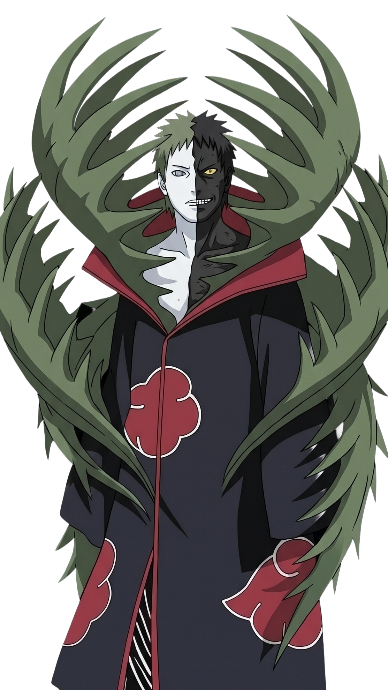
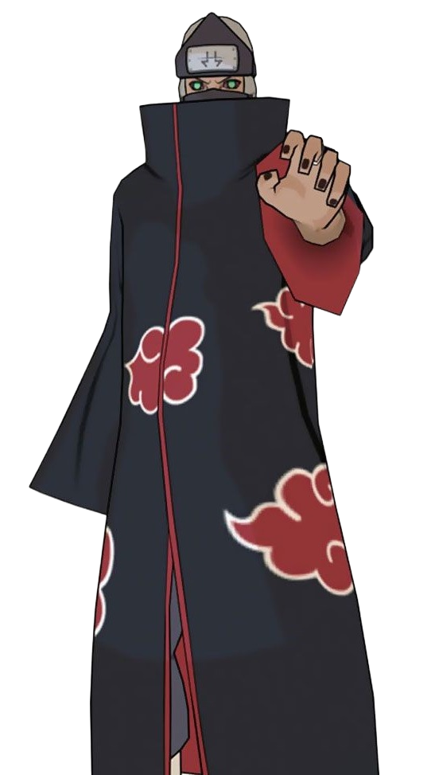
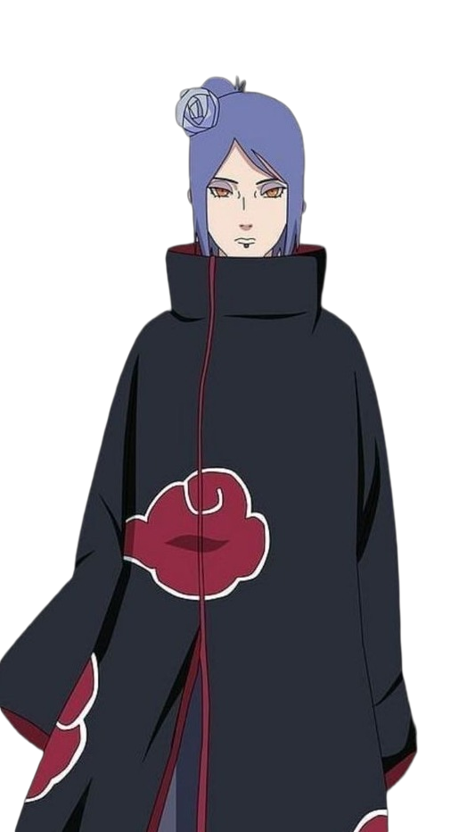
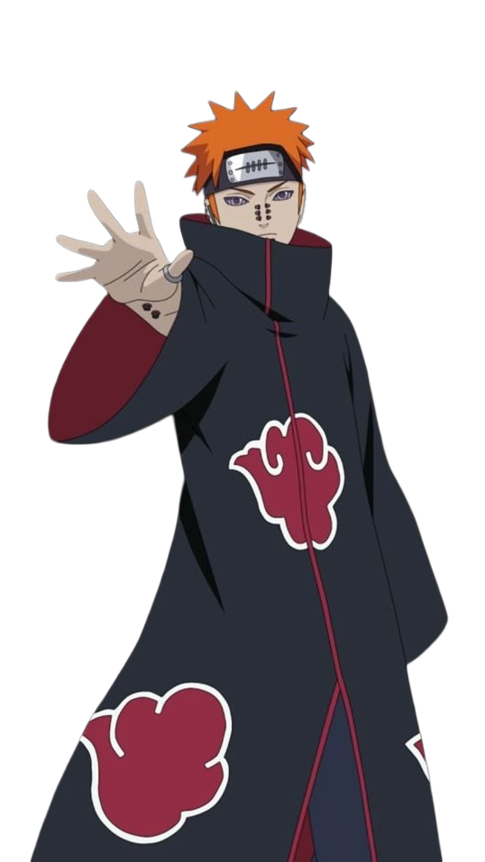
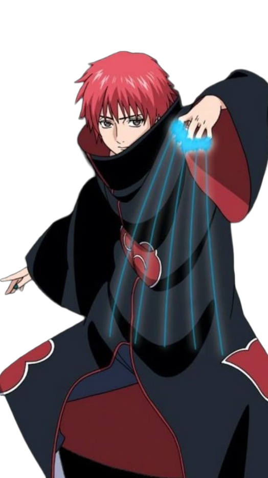
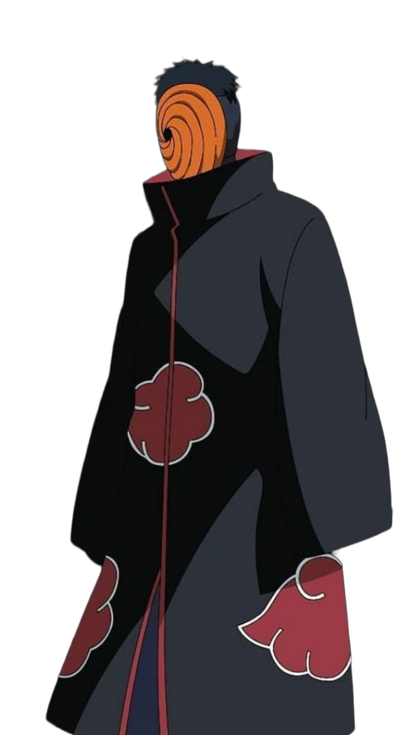
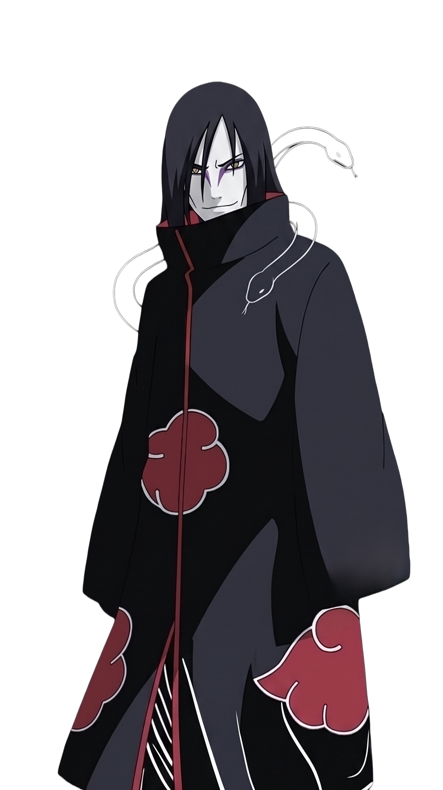
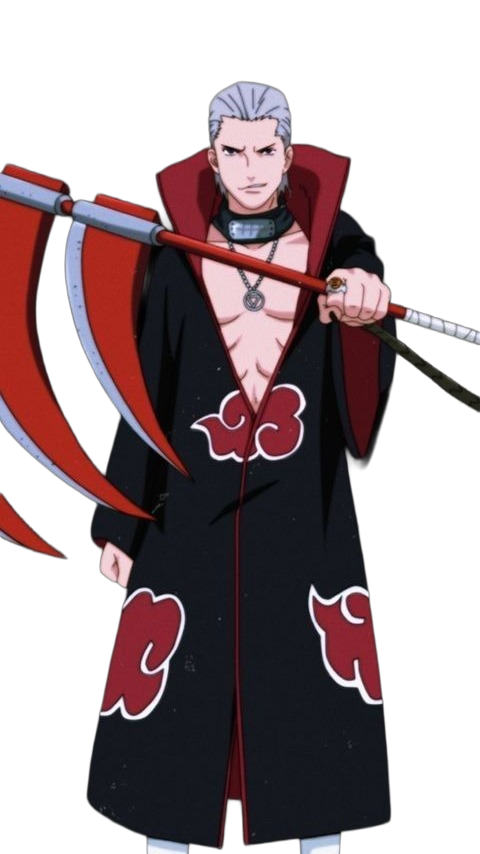

AKATSUKI ENCYCLOPEDIA
⋇Enter the world of the most infamous organization in the shinobi world.⋇
⋇Discover the members, history, abilities, origins, and battles of Akatsuki.⋇
What is the Akatsuki?
The Akatsuki is a secretive organization of powerful rogue shinobi in the Naruto series. Its members are easily recognized by their black cloaks with red clouds, a symbol connected to the wars and bloodshed in the Land of Rain. The organization was originally founded by Yahiko, Nagato, and Konan with the goal of bringing peace to their war-torn homeland. After Yahiko's death, Nagato took control under the name Pain, and the Akatsuki gradually became a dangerous organization focused on capturing the nine Tailed Beasts. Members such as Itachi, Kisame, Deidara, Sasori, Hidan, Kakuzu, Konan, Pain, and Obito joined the organization, usually working in pairs. Each member had unique abilities, personalities, and personal motivations. The Akatsuki's activities were ultimately connected to a much larger plan involving the Tailed Beasts, the Ten-Tails, and the Eye of the Moon Plan. Its story explores themes of war, peace, hatred, and the cycle of conflict within the shinobi world.
Who Founded the Akatsuki?
The Akatsuki was originally founded by three young shinobi: Yahiko, Nagato, and Konan. The organization was created in the Hidden Rain Village (Amegakure) during a period when the village was suffering from constant wars and political conflict. Unlike the Akatsuki that appears later in the Naruto story, the original organization was created with the goal of bringing peace to the world.
Zetsu

Kakuzu

Deidara

Kisame

Konan

Pain

Itachi Uchiha

Sasori

Tobi

Orochimaru

Hidan
